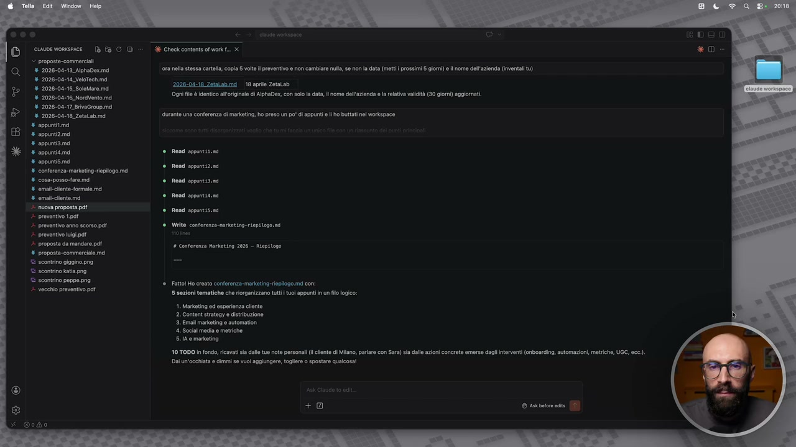
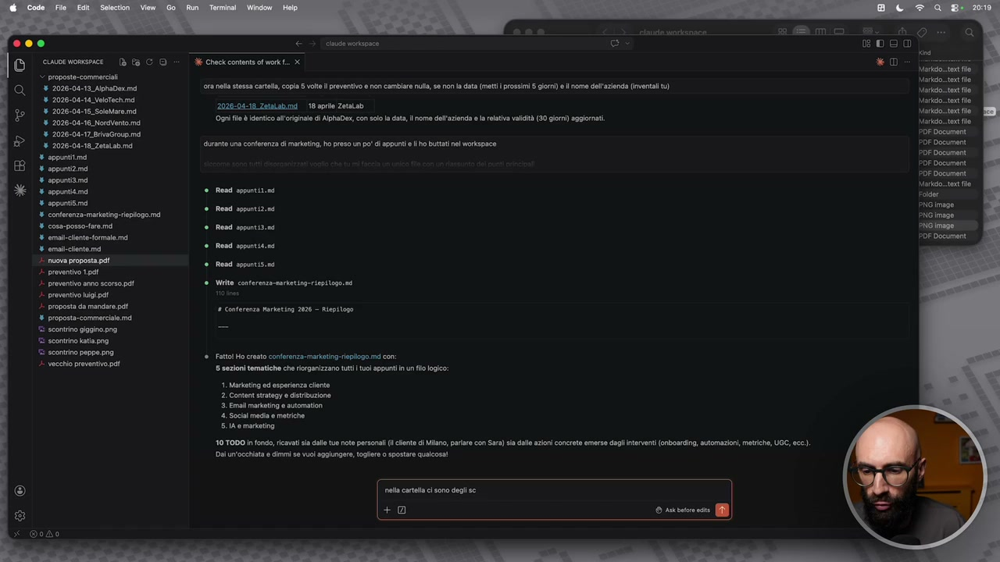
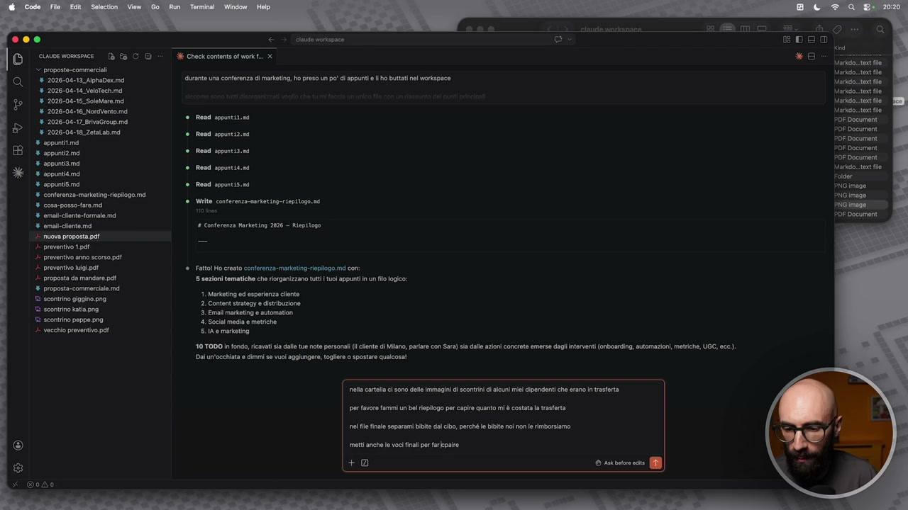
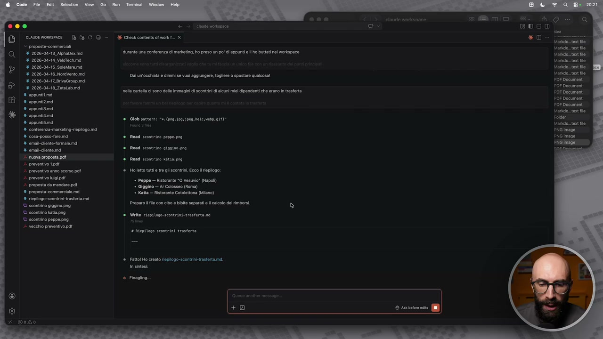
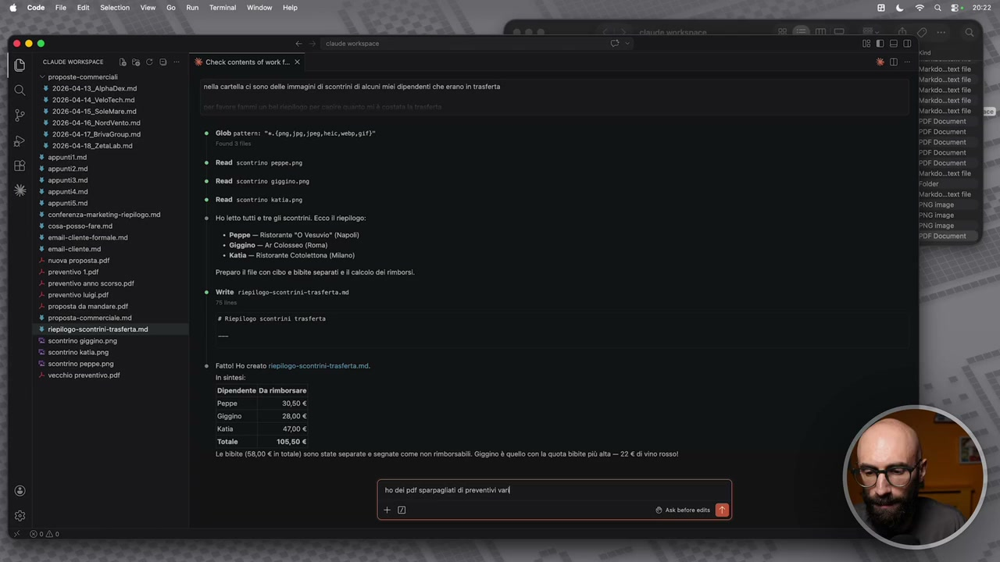
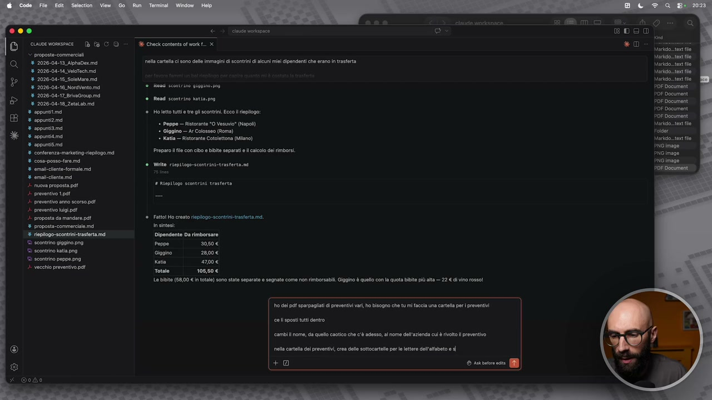
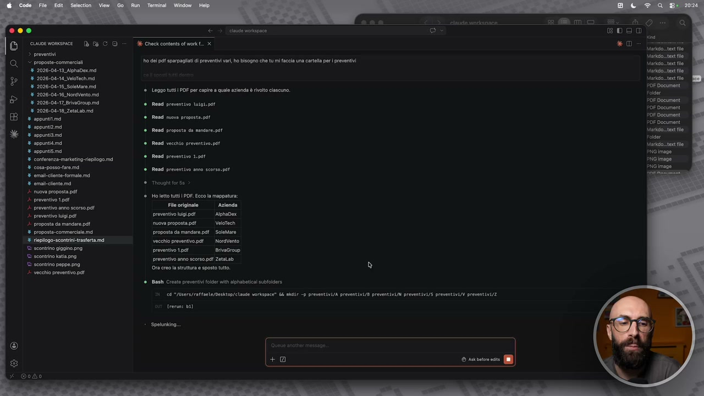
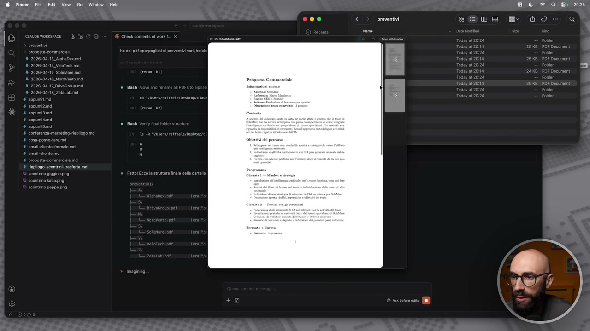
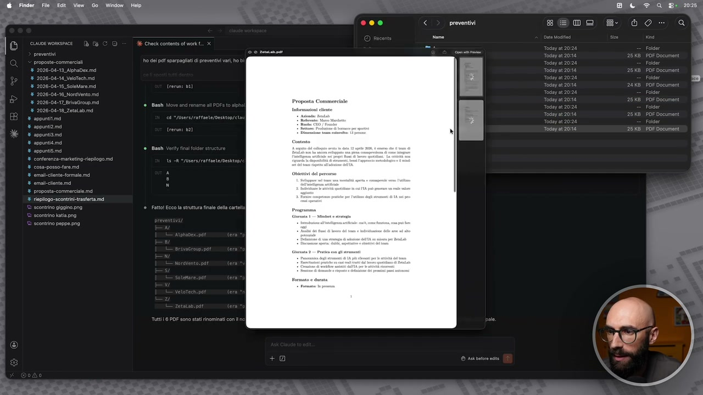

OCR: % 2026-04-13 Aphapecmd % 2026-04-14 Veitechmmd % 2026-08-16 SoloMare md + 2026-04-10. NordVento.mé % 2026-04-17 BivGroup.md 9 2026-06-18 Zetatab md + appuntitimd % appunta % sppuniami % spountitmd % appunti # conferenza. maieting riposo. me 8 cosa-posso fare md % omaltlnt- formale md + emaichlento mi ‘nuora proposta pd è praventvo 1pdî | prevontvo anno scorso pl 4 preventivo igipa +. proposta da mandare po ‘8 propostà-commerclale md © scontrino giagino png scontrino ting "E scontrino peppe. png vecchi preventivo pa E Check contents of won. x ora nella stessa cata copi ole l preventivo e non cambiare nua, e non la data (mett | prossimi ion) Il nome dall'azienda inventati tu) 2020-06-18 Zetalab md _ 18 apro ZetaLob gn fd identico alloiginal di haDes, con sl a data, | nome del'azionda e a relativa validità (30 gio) aggiornati. durante una conferenza di markain, ho preso un po' di sppunt lho buttati ne werkspace Road sgontiz.ni Read sppantizini Read spantit Rand ppantit. Read sppntisini Writ conterenze-nrtetingriepi 090 1 Conferenza parketing 2028 — Riepstono Fatto Ho creto conterenza-markaingieplogo md con: 5 sezioni tematiche che risgarizzano tuti | tuo appunti n flo logico: 1 Markating o esperienza cilento 2 Content strategy e distribuzione 3. Emali marketing e automation ‘4. Social media e metsche 5-14 0 marketing 10 TOO fondo, ricavati sa dll tue note personali cente di Miano, parlare con Sara) ia dalle azioni concrete emerse dagli interventi (onboardin, automazioni, metriche, UGC, ecc) ai un'occhiata e dimmi e vuo gglungere, toglere o spostare qualcosa!
E ora che stiamo prendendo un po' di confidenza e abbiamo capito che con Cloud Code dobbiamo lavorare in modo un po' diverso, le richieste che facciamo sono un po' diverse dai classici prompt e abbiamo visto anche qualche accenno ai file, voglio farvi vedere proprio la forza di poter lavorare sui file. Nella stessa cartella del workspace ho caricato un po' di cose diciamo inventate, sempre diciamo per fare degli esempi, per darvi qualcosa di concreto. Per esempio ho messo tre immagini e ho detto che sono degli scontrini. Sono scontrini finti ovviamente, li ho fatti con CGPT. Uno a Roma, in questo ristorante che si chiama Arcolosseo, uno a Milano, al ristorante che si chiama Cotolettona e uno a Napoli, in un ristorante che si chiama Ovesuvio. Come potete capire c'è molta fantasia nei miei esempi. Potrei fare una cosa del genere, visto che qua dentro ci sono queste immagini, quindi non sono delle immagini, non sono dei file di testo, mettiamolo così. Io potrei dire, nella cartella ci sono degli scontrini, anzi diciamo ci sono delle immagini di scontrini di alcuni miei dipendenti

OCR: 000 © cuorvonsnce Db 19 CO» d Cheekcomensol mont. x > proposte-commercili ‘4 2026-04-13_Nphadex md ora nel stessa carol, copla 5 vlt preventivo e non cambiare n, se nora data (mett prossimi 5 gior) el nome dell'azienda (venti tu) % 2026-04-14. Velotech md % 2026-04-15 SoleMare md % 2026-04-18. NordVento md + 2026-04-17 BrvaGravp.md % 2026-04-18. Zetalab md rante una conferenza di mrketing, ho praso un po i appunti li ho buttati nel workspace # appuntitmd % appunt2.md % appuntiimd % appunti. md Road appantitini % appuntismd % conterenza-marketing-ieplogo. md % cosa-posso-fare.md. Read sppant 13.0 8 omali-contoformale md % emali-eiente.mi Reed sopentit. ni Vicini Read oppantiS.0d + preventio Lpdt %: Preventio anno scorso pl Write conferenza-marieting-riepitogo. 1 privo gip tea + proposta da mendir. pat # Conferenza Marketing 2026 — Riepilogo ‘8 proposta-commerciale md e scontrino gigino png = E scontrino kaiapng ‘S scontrino peppe. png Fato Mo creto conerenz-markaing:replogo md con peer) 5 sezioni tematiche che riogarizzano tut to appunti n flo logico: 2026-04-18 ZetaLab md _ 18 apr Zotalab ‘gni fl d identico all'originale di haDes, con slo a data, nom dell'azienda e la relativa valità (30 gio) aggicrati. Read spantizoni 1 Markating od esperienza cento 2 Contnt strategy e distribuzione 3 mal markatin e automation ‘4. Social media e metriche 5-14 0 marketing 10 T0DO n fondo, ricavati sa call tue note personali cente di iano, parlare con Sara) si dalle azioni concrete emerse dagli interventi (onboarcin, automazioni, metriche, UGC, ecc) Dal un'occhiata e dimmi se vuo aggiungere togliere o spostare qualcosa! Ss
che erano in trasferta. Qua gli dico, per favore, fammi un bel riepilogo per capire quanto mi è costata la trasferta. Poi gli dico, nel file finale, separami bibite dal cibo perché le bibite noi non le rimborsiamo. Sto inventando tutto, ovviamente. Metti anche le voci finali per far capire, per farmi capire quanto devo a ogni persona. Invio. E non gli

OCR: È cioe womspice [è Ea C © “= Check contents of workf.. x proposto commercai ‘8 2026-04-13, NphaDecimd rante una conferenza ci martin, ho preso un po" di spunti el ho buttati nl uerkapace % 2026-04-14 VelsTechind % 2026-04-16. Solero md + 2026-04-16, NoroVento.md + 2026-04-17 Brivgroupimd % 2026-08-18 Zotatab md lei copi si + appuntiima % appunta è Road spgntidina orti ® Rand ppantit.ni * appuntiimd appunti è Read opgntisini conferenza merkatin. riepilogo mi 4 cosa-posso-tare.md % omai-clent.formale. md ‘8 omad-cente md # conferenza Marketing 2026 - Miepitogo 1 nuora proposta pd preventivo Lpd1 |. preventivo anno scorso pal è preventivo lina Fatto Ho creato conferenza: marknting-replogo md con: + proposta da mandare pe ‘5 sezioni tematiche che organizzano tutt tuoi appuntin un flo logic: csi liner ie section 1 coin st rtione Di i ooo sere i (Cera È siae Foyssoli 10 100 in fondo, mati sa dal tue note personali i cente di Miano, parlare con Sara) sia dille azioni concrete emerso dagli interventi (onboardin, automazioni, metriche, UGC, ee). Dal unvocchiata e dimmi se vu giungere, togler o spostare qualcosa! è Road sppuntiz.ni rito conferenza martetin-riepi logo ea arte ci sono delle Immagini i scorri di alcun ie dipendenti che erano n trasterta perfavore fammi un bl ieogo per capre quanto mi è costata a rasferta nel fl nale separami bibite dl cibo, perché i bibite noi non le rinbrsiamo mett anche le voci nai per arpa +
dico nient'altro. Quindi di nuovo, ragiono in termini dell'output che voglio ottenere, cioè del file che voglio ottenere. Qua sta facendo in modo smart la ricerca delle immagini, vedete cerca solo per png, jpeg, gif, quindi proprio formati di immagini. Ha capito che scontrino Peppe è uno scontrino, scontrino Gigi è uno scontrino, scontrino Katia è uno scontrino. Adesso va a leggere questo materiale, va a leggere questa informazione, questo per farvi capire che gestisce le immagini. Dopo vedremo anche i pdf. Dice, li ho letto, ecco qua, Peppe è stato al ristorante Ovesuvio, Gigi è stato al Colosseo, Katia è stata al ristorante Cotolettona. Dice, adesso gli faccio il file che mi hai chiesto, con la separazione. Gli autorizziamo ovviamente la scrittura. Poi tra un po' l'autorizzo per la sessione, altrimenti non ne usciamo più. E ci ha fatto il nostro riepilogo finale. Eccolo

OCR: [È] a cime women Db fa CO proposte. commerciali 4 2026-04-13 AptaDecmd % 2026-04-14 Veitechmnd % 2026-04-16 Solero md % 2026-04-16. NoraVento.md % 2026-04-17 BrivoGroup.mé % 2026-06-18 Zetatabmd % sppuntitimd % appunti 4 appunta % appuntama % appunti conferenza. markatin. epilogo ma 8 cosa-posso farei omai lnt formale md 2% omalcento mi 7 nuota proposta pa 2. preventivo 1991 ». proventvo anno scorso pal è prevent ig.pat + proposta da mandare pa ‘8 proposta commerciale. md ‘ tiplogo.scontrini-trastert md scontrino giagino. png ‘È scontrino katia. © scontrino peppe png. è vecchi preventivo. pa G 36 Check content of work. x rante una conferenza di arkatin, ho preso un po'di ppunt e lo buttati ne workspace ai unocchiata e dimmi s vuol sgglungee, togliere o spostare qualcosa! eta arte ci ono dle Immagini i sconti i alcun e dipendenti che erano in trasferta (ng 59 pg, ec veto)" Read scontrino peppe.prg Read scontrino giggino.poa Rendi scontrino katia. prg Ho letto tut tre gli contra. Ecco i riepigo: Peppe — Ristorante “0 Vesuvio" (Napol] * Glggino — Ar Colosseo (Roma) Katia — Ristoranto Cotoetona (lano) Preparo le con cibo e bibite separati calcolo del rimborsi. Write riepitogo-contrinitrasterta.ne Riepilogo scontrini trasferta
qua, qua abbiamo pure la nostra bella tabellina. Apriamoci il file. Ovviamente lo mettiamo sempre in modalità anteprima per vederlo bene. Eccolo qua, questo è quello che è successo al ristorante Ovesuvio, questo è quello che è successo al Colosseo, questo è quello che è successo a Cotolettona. E qua mi dice pure, ecco il totale, le bibite è venuto 58, il cibo è venuto 105,50. Dice, guarda Peppe devi questo, qua ci sono quello che devi, quindi il cibo è rimborsabile e le bibite invece non rimborsabili per ogni persona. Questo per far vedere come lavora con le immagini. Ma in realtà io ho caricato anche dei pdf qua. I pdf sono semplicemente, diciamo, i preventivi, le proposte commerciali che vi ho fatto vedere in qualche video prima, ok? Le ho convertite in pdf per far vedere che lavora anche sui pdf. Qua gli dico, ho dei pdf sparpagliati di preventivi vari. Vedete

OCR: plate sneiemaze 000 E < © Suorvonence Db fa CO - E chectcomentot mett. x > proposto commerciali 2020-06-19 ApraDerma net carta ci ono delle Immagini i sconti i cuni ici dipendenti che eran n tasterta % 2026-04-14 Veltechimd % 2026-06-16 SoloMere md + 2026-04-10, NoraVento.md % 2026-04-17 BrivaGroupimé (on: pa peg nic, nto.) % 2026-08-18 Zetatab md % sppuntitimd % appunti md % appunta Read scontrino giggino. pro % appunta esi Rondi scontrino atis.prg conferenza markatin. riepilogo ma % cosa-posso-fare md % omalclnt- formale md * Peppe — Ristorante "0 Vesuvio" (Napol} % omaiclento ma * Giggino — Ar Colosso (Roma) toa vi * Katia — Ristoanto Cotoettona (Milano) preventivo 1pd1 Preparo lle con cibo bibita separati il calcolo de rimborsi. è preventivo ano scorso pa è. preventivo ligi.pat Write api togo-tcontrinitrasterta.ni proposta da mandare po = ‘4 proposta commerciale md 1 Riepilogo scontrini trasferta fiepilogo-scontin.trasferta md scontrino gigio. png "scontrino ati.png "scontrino peppe. png È vecchio preventivo. pa Read scontrino pepe. pra Ho letto tutt tre gi scontrini. Eco riepiogo: Dipendinte Da rimborsare Peppe 2080€ Gigaino 260€ Kata 470€ Totale 108508 Lo bibite [58,00 < n totale) sono state separato o segnato com non rimborsabili iggino è quell con la quota bibite più ata — 22 € di vino rosso 0 pt mpeg pei vr +0 SS )
li ho chiamati anche in modo diverso, nuova proposta, preventivo 1, preventivo annolo scorso, preventivo Luigi, proposta da mandare, vecchio preventivo, con nomi così a caso. Ho dei pdf sparpagliati di preventivi vari. Ho bisogno, e qua vi faccio vedere anche come lui lavora sui file, ho bisogno che tu mi faccia una cartella per i preventivi, ce li sposti tutti dentro. Cambi il nome da quello caotico che c'è adesso al nome dell'azienda a cui è rivolto il preventivo. Anzi, facciamolo un pochino più complicato. Facciamo così, la cartella dei preventivi, crea delle sottocartelle per le lettere dell'alfabeto, esposta i pdf

OCR: licia sun ma mo s € e DOS) 3 Check content af wont. x *0 8 2026-04-13 ApraDecimd eta carta ci ono delle immagini i scontrini di alcun mie dipendenti che erano n trasferta % 2026-04-14 Veltechmd % 2026-04-16. Solero md + 2026-06-16. NoraVento.md Hnna scnicino 9199100309 + 2026-04-17 BevGroup.md % 2026-08-18 Zetatab md % sppuntitimd Holetto tutti e te gli scontrini Eco. repo: Vacca * Peppe — Ristorante "0 Vesiio* (Napol) ei Glggino — Ar Colosseo Roma) % appuntita © Katia Ristorante Cotolettona (tlno) % appunti pae adi Prepar il e con cio e bibite separati calcolo de rimborsi. % coss-posso-fremd mal clont-formale md % emaiclente mi precari 1 Riepitogo scontrini trasferta è preventivo 1pd1 ». proventivo ono scorso pat preventivo higipa proposta da mandare pl ‘4 proposta commerciale md fipilogo-scontintrasfrta md scontrino giagino. png ‘© scontrino ati.png "8 scontrino peppe. png. è vecchio preventivo pa Read scontrino katia.pno Wi iepitogo-scontrini-trasterta.ni e segnate come non rimborsabili Giggino è quell co la quota bibita più alta — 22 € ci vino rosso! 0 gel pa sparpagiati di preventivi var, ho bisogno che tu mì faccia na carta per preventivi cell'posti uti dentro cambi nome, a quell caotico che c'è adesso, al omo dell'azienda cu è rivoto preventivo net arte del prevent ceo del sottocartelle per le etere ceto +0 © rakotoe ect (0 |
nella cartella, nella sottocartella giusta. L'ho fatto volutamente complicato per dirvi così, c'ho A, B, C, D, no? Quindi che ne so, qua c'è l'alphadex finirà nella cartella A, velotec nella cartella B, e così via. Per farvi vedere quanto è in grado di lavorare con i file. File, cartelle, sottocartelle, creare, rinominare, spostare. Adesso deve fare varie cose, tutto in contemporanea. Tra l'altro adesso qua ci chiede anche, diciamo, di installare un'estensione. Non lo facciamo ancora. Chiudo questo, sono tentato, ma chiudo questo messaggio e tra qualche lezione vi faccio vedere cosa sono le estensioni di VS Code. Cioè, ve l'ho fatto già vedere in realtà, quindi dopo le installiamo. Allora mi dice, mi autorizzi a fare questa cosa, quindi a creare le sottocartelle? Gli dico sì, fallo. Adesso quindi, se andiamo

OCR: 000 © > eine orspace © Sosorvonene fa CO A checkcontnoti. x > prevent @, > proposte commerciali ho ei pal «parpagiati i roventi vari, ho bisogno che ti mì faccia una arte por preventivi % 2026-04-12 Apradecmd 8 2026-08-14 Valorechmd % 2026-04-15. SoloMre md + 2026-04-18 Noravento.md % 2026-04-17 BrivoGroupimd Read preventivo tusgs.pot % 2026-04-10 Zetatabmd % sppuntiimà Rendi muova proposta. pdf % appunti. % appunta appunta Rand vecchio preventivo.pot + sppntisim 8 conferenza markating.replogo md % coss-posso-fare.ma Read preventivo anno scorso.pdt mai clnt- formale md 8 amante md Thought for 65 Fi Ho letto tuti POE. Ecco la mappature: Vine Fe originale“ Azienda 1 prato ik prevantho bigipa -—Ahabex proposta da mandare pd uva proposta dî | VeloTech proposta commerciale md proposta da mandare pdf. Solare * lpilogo-scontin-trasferta mi vecchi preventivo. pa. NdVento ‘ econtrin giggino. png preventivo 1901 Brvacrou scontrino katia.png 865 "© scontrino peppe png. Ora creola sruitua e sposto tutto. + vecchio preventivo pe Leggo tuti POF per capre a quale azienda è rivolto ciascun. DE Document Read proposta da nandare.pdt Morkio.tart flo Rsad preventivo 1,591 Bash Croato proventi flor ti 29 "IMrs/raffaete/Desktop/ claude versace” LL ndr -p preventivi/a preventivi preventivi/i preventivi/s preventivi/v preventivi/z rerum: DI Spetuniig.. ci
qua nella nostra cartella del workspace, c'è la cartella che si chiama preventivi, che prima non c'era, dentro la cartella preventivi ha creato A, B, N, S, V, Z. Mi aspetto che adesso cosa succeda? Esatto, sposti e rinomini. Quindi gli dico sì, fallo. E adesso in queste cartelle ci dovrebbero essere, ecco qua, questo è Alphadex, apriamolo per sicurezza, ecco qua, questo è Alphadex. Poi in B cosa ci ha messo? Briva Group, eccolo qua. In N ci ha messo Nordvento, in S ci ha messo Solemare, in V ci ha messo Velotec, in Z ci ha messo

OCR: Finder File Edit View Go Window | Help < preventivi 8E0a

OCR: Finder File Edit View Go Window Help a ea e 208 ° < preventivi 8
Zlab. Questo per farvi vedere come in un solo colpo abbiamo fatto un'operazione che richiede diversi passaggi. Cioè aprire il file, aprire un'informazione dal file, usare quell'informazione per scrivere il nome del file, spostare una cartella creata ad hoc in base a una regola che abbiamo detto noi, e così via. Di nuovo, questo esempio è su 6 file, quando sono 2, 4, 6. Immaginatevi, questa cosa la dovete fare su 100 documenti, su 200 documenti, su 1000 documenti. E questo per farvi vedere anche quanto Cloud Code è in grado di lavorare con i file. Immagini, PDF, creare cartelle, no, rinominarle, cancellarle, spostarle, e così via.